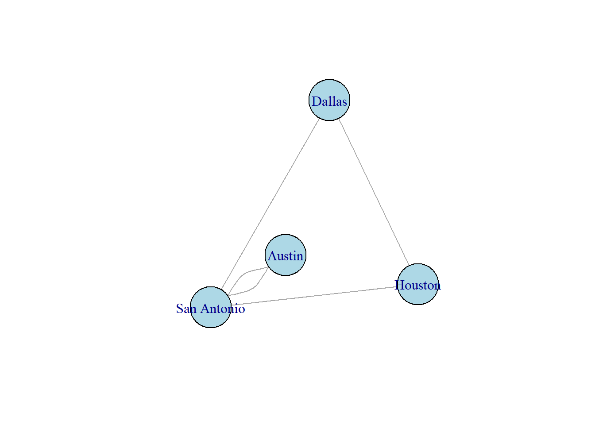

Chapter 3 Eigenvalues and Eigenvectors
Eigenvalues and eigenvectors play a critical role in many matrix applications. In this chapter, we will introduce the paired concepts and see some applications of them.
3.1 Eigenvalues and Eigenvectors
When a vector is multiplied (on the left) by an appropriately sized matrix, you get another vector. This is sometimes referred to as a linear transformation.
For instance if
\[\mathbf{A}=\begin{bmatrix} 1 & 2 \\-1 & 3\end{bmatrix}\]
and
\[\mathbf{x}=\begin{bmatrix} 2\\1\end{bmatrix},\]
then
\[\mathbf{A}\mathbf{x}=\begin{bmatrix} 1 & 2 \\-1 & 3 \end{bmatrix}\begin{bmatrix} 2\\1\end{bmatrix}=\begin{bmatrix}4\\1\end{bmatrix}\]
Multiplication by \(\mathbf{A}\) transforms the vector \(\mathbf{x}=(2,1)\) into the vector \((4,1)\) (Fig. 3.1).
Figure 3.1: A linear transformation
Note that
\[\mathbf{A}\mathbf{e}_1=\begin{bmatrix} 1 & 2 \\-1 & 3\end{bmatrix}\begin{bmatrix}1\\0\end{bmatrix}=\begin{bmatrix}1\\-1\end{bmatrix},\]
which is the first column of \(\mathbf{A},\) while
\[\mathbf{A}\mathbf{e}_2=\begin{bmatrix} 1 & 2 \\-1 & 3\end{bmatrix}\begin{bmatrix}0\\1\end{bmatrix}=\begin{bmatrix}2\\3\end{bmatrix},\]
which is the second column of \(\mathbf{A}.\)
In general, if \(\mathbf{A}\) is any matrix and \(\mathbf{e}_i\) is the standard basis vector of appropriate length, then \(\mathbf{A}\mathbf{e}_i=\mathbf{a}_i,\) the \(i\)th column of \(\mathbf{A}\)!
Now consider the product
\[\mathbf{A}\mathbf{x}=\begin{bmatrix}1& -1\\2&4\end{bmatrix}\begin{bmatrix}-1\\2\end{bmatrix}=\begin{bmatrix}-3\\6\end{bmatrix}.\]
For this matrix/vector pair, we have \(\mathbf{A}\mathbf{x}=3\mathbf{x}.\) Multiplication by \(\mathbf{A}\) stretches this particular vector by a factor of \(3\). This doesn’t happen with every vector. Indeed,
\[\mathbf{A}\mathbf{e}_1=\begin{bmatrix}1\\2\end{bmatrix}.\]
The vector \(\mathbf{x}=\begin{bmatrix}-1\\2\end{bmatrix}\) is what we call an eigenvector for the matrix \(\mathbf{A},\) and the scaling factor 3 is called an eigenvalue of \(\mathbf{A}.\)
Definition 3.1 Let \(\mathbf{A}\) be an \(n\times n\) (square) matrix, and let \(\mathbf{x}\) be a nonzero vector such that \(\mathbf{A}\mathbf{x}=\lambda \mathbf{x}\) for some scalar \(\lambda\). Then \(\mathbf{x}\) is an eigenvector of \(\mathbf{A}\) with corresponding eigenvalue \(\lambda\).
Some notes:
While the zero vector satisfies \(\mathbf{A0}=\mathbf{0}\) for matrices \(\mathbf{A},\) we never call it an eigenvector.
Eigenvectors aren’t unique. For instance, if \(\mathbf{A}\mathbf{x}=\lambda \mathbf{x}\), and \(r\) is any nonzero constant, then \[\mathbf{A}(r\mathbf{x})=r\mathbf{A}\mathbf{x}=r\lambda \mathbf{x}=\lambda(r\mathbf{x}),\] so any nonzero multiple of an eigenvector is also an eigenvector for the same eigenvalue. Some applications use eigenvectors of magnitude 1, while others use eigenvalues whose entries add up to 1.
Now that we’ve defined eigenvectors and eigenvalues, we need to figure out how to find them.
Eigenvectors and eigenvalues satisfy the equation
\[\mathbf{A}\mathbf{x}=\lambda\mathbf{x}.\]
With a little rearrangement, and using the trick \(\mathbf{I}\mathbf{x}=\mathbf{x}\), we get the following:
\[\begin{align*} \mathbf{A}\mathbf{x}&=\lambda \mathbf{x}\\ \mathbf{A}\mathbf{x}-\lambda\mathbf{x}&=\mathbf{0}\\ \mathbf{A}\mathbf{x}-\lambda \mathbf{I}\mathbf{x}&=\mathbf{0}\\ (\mathbf{A}-\lambda \mathbf{I})\mathbf{x}&=\mathbf{0}. \end{align*}\]
If \(\mathbf{A}\) is a square \(n\times n\) matrix, then \(\mathbf{B}=\mathbf{A}-\lambda\mathbf{I}\) is also an \(n\times n\) matrix. Remember that for a square matrix \(\mathbf{B},\)
\[\mathbf{B}\mathbf{x}=\mathbf{0}\]
has a nontrivial solution if and only if \(\det \mathbf{B}=0.\) The matrix \(\mathbf{A}\) will have the eigenvalue \(\lambda\) if and only if
\[ \det(\mathbf{A}-\lambda\mathbf{I})=0. \tag{3.1} \]
This is the characteristic equation for the matrix \(\mathbf{A}.\) Any nontrivial solution to the characteristic equation will be an eigenvector corresponding to the eigenvalue \(\lambda.\)
To sum up, we have the following.
Theorem 3.1 The value \(\lambda\) is an eigenvalue for the \(n\times n\) matrix \(\mathbf{A}\) if and only if
\[\det(\mathbf{A}-\lambda\mathbf{I})=0.\]
Corresponding eigenvectors are nonzero solutions to
\[(\mathbf{A}-\lambda \mathbf{I})\mathbf{x}=\mathbf{0}.\]
For a given matrix \(\mathbf{A},\) \(\det(\mathbf{A}-\lambda\mathbf{I})\) is a polynomial in \(\lambda\), called the characteristic polynomial of \(\mathbf{A}.\)
Example 3.1 Let’s find eigenvalues and eigenvectors for the matrix
\[\mathbf{A}=\begin{bmatrix}1 & -1\\2 & 4\end{bmatrix}.\]
We have
\[\mathbf{A}-\lambda \mathbf{I}=\begin{bmatrix}1 & -1\\2 & 4\end{bmatrix}-\begin{bmatrix}\lambda & 0\\0 & \lambda\end{bmatrix}=\begin{bmatrix}1-\lambda & -1\\2 & 4-\lambda\end{bmatrix}.\]
Then
\[\begin{align*} \det(\mathbf{A}-\lambda \mathbf{I})&=(1-\lambda)(4-\lambda)-(-1)(2) \\ &=4-\lambda-4\lambda+\lambda^2+2\\ &=\lambda^2-5\lambda+6=(\lambda-2)(\lambda-3). \end{align*}\]
The characteristic equation \(\det(\mathbf{A}-\lambda \mathbf{I})=0\) for this matrix is
\[(\lambda-2)(\lambda-3)=0.\]
The eigenvalues are \(\lambda_1=3\) and \(\lambda_2=2\). (Let’s write them in decreasing order.) Now that we know the eigenvalues, we can solve for the corresponding eigenvectors. We will start with \(\lambda_1=3\). A corresponding eigenvector must satisfy
\[(\mathbf{A}-3\mathbf{I})\mathbf{x}=\mathbf{0}.\]
With
\[\mathbf{A}=\begin{bmatrix}1 & -1\\2 & 4\end{bmatrix},\]
\[\mathbf{A}-3\mathbf{I}=\begin{bmatrix}1-3 & -1 \\2 & 4-3\end{bmatrix}=\begin{bmatrix}-2 & -1 \\2 & 1\end{bmatrix}.\]
To solve \((\mathbf{A}-3\mathbf{I})\mathbf{x}=\mathbf{0}\), we reduce:
\[\left[\begin{array}{rr|r}-2 & -1 & 0\\2 & 1 & 0\end{array}\right] \leadsto \left[\begin{array}{rr|r} 1 & 1/2 & 0\\0 & 0 & 0\end{array}\right].\]
Any vector \(\mathbf{x}=(x_1,x_2)\) that satisfies \(x_1=-\frac{1}{2}x_2\) will be an eigenvector. For instance, \(\mathbf{x}=(-1,2)\) is the one we saw in the example. We’ll let \(\mathbf{x}=\mathbf{x}_1=(-1,2)\) be our eigenvector corresponding to \(\lambda_1=3.\)
Note that in
\[\mathbf{A}-3\mathbf{I}=\begin{bmatrix}-2 & -1 \\2 & 1\end{bmatrix},\]
the rows are multiples of each other. We can actually use either row to find a relationship between the coordinates, without having to row reduce. (This only works for \(2\times 2\) matrices.) The second row tells us that \(2x_1+x_2=0\), or \(x_2=-2x_1\). If we let \(x_1=1\), we get \(x_2=-2\), for an eigenvector of \(\mathbf{x}_1=(1,-2)\), which is a multiple of the one we observed earlier.
To sum up, for \(2\times 2\) matrices, once we’ve found \(\mathbf{A}-\lambda \mathbf{I}\), we can jump straight to the eigenvector.
Now let’s find an eigenvector corresponding to \(\lambda_2=2\). We have
\[\mathbf{A}-2\mathbf{I}=\begin{bmatrix}1-2 & -1 \\2 & 4-2\end{bmatrix}=\begin{bmatrix}-1 & -1 \\2 & 2\end{bmatrix}.\]
The first row tells us that \(-x_1-x_2=0,\) or \(x_2=-x_1\). The vector \(\mathbf{x}_2=(1,-1)\) works. Let’s check:
\[\mathbf{A}\mathbf{x}_2=\begin{bmatrix}1 & -1\\2 & 4\end{bmatrix}\begin{bmatrix}1\\-1\end{bmatrix}=\begin{bmatrix}2\\-2\end{bmatrix}=2\mathbf{x}_2\checkmark.\]
Eigenvalues and Eigenvectors in R
We can use R to find eigenvalues and eigenvectors via the eigen function from the base package. If they are all real numbers, the eigenvalues will be listed in descending order. The corresponding eigenvectors are listed in the same order. The eigenvectors are scaled so that the have magnitude 1.
## [,1] [,2]
## [1,] 1 -1
## [2,] 2 4## eigen() decomposition
## $values
## [1] 3 2
##
## $vectors
## [,1] [,2]
## [1,] 0.4472136 -0.7071068
## [2,] -0.8944272 0.7071068If you give a name to the eigen output, it makes it a little easier to extract the eigenvectors.
## [,1] [,2]
## [1,] 0.4472136 -0.7071068
## [2,] -0.8944272 0.7071068## [1] 0.4472136 -0.8944272## [1] -0.7071068 0.7071068Another option for finding eigenvalues and eigenvectors for small matrices is WolframAlpha.com. After you enter a matrix, the engine will spit out several of its properties. As of this writing, the Desmos.com matrix calculator does not do eigenvalue/eigenvector computations.
Higher dimensional matrices
The characteristic polynomial for a \(2\times 2\) matrix is a quadratic polynomial. The characteristic polynomial for an \(n\times n\) matrix will be an \(n\)th degree polynomial, which makes it harder or impossible to do by hand.
Example 3.2 Find the eigenvalues and eigenvectors for
\[\mathbf{A}=\begin{bmatrix}-1 & 2 & 0\\2 & 0 & 2\\0 & 2 & 1\end{bmatrix}.\]
We have
\[\begin{align*}\det(\mathbf{A}-\lambda\mathbf{I})&=\begin{vmatrix}-1-\lambda & 2 & 0\\2 & -\lambda & 2\\0 & 2 & 1-\lambda\end{vmatrix}\\ &=-\lambda^3+9\lambda\\ &=-\lambda(\lambda^2-9)\\ &=-\lambda(\lambda+3)(\lambda-3) \end{align*}\]
The eigenvalues are \(\lambda_1=3,\lambda_2=0,\) and \(\lambda_3=-3.\)
For \(\lambda_1=3,\) we reduce.
\[\begin{align*} \left[\begin{array}{ccc|c}-1-3 & 2 & 0&0\\2 & 0-3 & 2&0\\0 & 2 & 1-3&0\end{array}\right]&=\left[\begin{array}{ccc|c} -4 & 2 & 0&0\\2 & -3 & 2&0\\0 & 2 & -2&0\end{array}\right] \\ &\leadsto \left[\begin{array}{ccc|c} 1 & 0 & -1/2 &0\\0 & 1 & -1&0\\0 & 0 & 0&0\end{array}\right] \end{align*}\]
We get that \(x_3\) is free, \(x_1=\frac{1}{2}x_3\) and \(x_2=x_3\). Setting \(x_3=2\) gives us \(\mathbf{x}_1=(1,2,2).\)
For \(\lambda_2=0,\) we get the following.
\[ \left[\begin{array}{ccc|c}-1 & 2 & 0&0\\2 & 0 & 2&0\\0 & 2 & 1&0\end{array}\right]\leadsto \left[\begin{array}{ccc|c} 1 & 0 & 1 &0\\0 & 1 & 1/2&0\\0 & 0 & 0&0\end{array}\right] \]
Again, with \(x_3\) free, we get \(x_1=-x_3\) and \(x_2=-\frac{1}{2}x_3.\) Setting \(x_3=2\) gives us an eigenvector of \(\mathbf{x}_2=(-2,1,2)\).
For \(\lambda_3=-3,\) we have this.
\[\begin{align*} \left[\begin{array}{ccc|c}-1+3 & 2 & 0&0\\2 & 0+3 & 2&0\\0 & 2 & 1+3&0\end{array}\right]&=\left[\begin{array}{ccc|c} 2 & 2 & 0&0\\2 & 3 & 2&0\\0 & 2 & 4&0\end{array}\right] \\ &\leadsto \left[\begin{array}{ccc|c} 1 & 0 & -2 &0\\0 & 1 & 2&0\\0 & 0 & 0&0\end{array}\right] \end{align*}\]
The relationships are \(x_1=2x_3\) and \(x_2=-2x_3\), so letting \(x_3=2\) gives us our final eigenvector of \(\mathbf{x}_3=(2,-2,1).\)
3.2 Special Cases and Complications
There are some matrices for which it is easy to find eigenvalues.
Diagonal and triangular matrices
We talked about diagonal and triangular matrices in Section 1.6. It is easy to find their eigenvalues.
Example 3.3 Find the eigenvalues and eigenvectors for \(\mathbf{A},\) where
\[\mathbf{A}=\begin{bmatrix}2 & 3\\0 & 5\end{bmatrix}.\]
Note that
\[\det(\mathbf{A}-\lambda \mathbf{I})=\begin{vmatrix}2-\lambda & 3\\0 & 5-\lambda\end{vmatrix}=(2-\lambda)(5-\lambda),\]
so the eigenvalues are 2 and 5, the entries on the diagonal.
When we subtract \(\lambda\) from the diagonal, a triangular or diagonal matrix stays triangular or diagonal, and the determinant is the product of the diagonal entries. This gives us the following theorem.
Theorem 3.2 Let \(\mathbf{A}\) be an \(n\times n\) diagonal, upper triangular, or lower triangular matrix. The eigenvalues of \(\mathbf{A}\) are the entries on the diagonal of \(\mathbf{A}.\)
This means that we can immediately read off the eigenvalues for these special matrices.
Returning to Example 3.3, we should find the eigenvectors. We’ll start with \(\lambda_2=2.\) First, remember that the columns of a matrix tell us what happens to the standard basis vectors. Note that
\[\mathbf{A}\begin{bmatrix}1 \\0\end{bmatrix}=\begin{bmatrix}2\\0\end{bmatrix},\]
so \(\mathbf{x}_2=\begin{bmatrix}1\\0\end{bmatrix}\) is an eigenvector corresponding to \(\lambda_2=2.\)
We still need to find the eigenvector corresponding to \(\lambda_1=5.\) This one takes a little more work.
\[\left[\begin{array}{cc|c} 2-5 & 3 & 0\\0 & 5-5 & 0\end{array}\right]=\left[\begin{array}{rr|r}-3 & 3& 0\\0 & 0 & 0\end{array}\right].\]
The first row tells us that \(3x_2=3x_1\) or \(x_2=x_1\). Thus \(\mathbf{x}_1=\begin{bmatrix}1\\1\end{bmatrix}\) is an eigenvector corresponding to \(\lambda_1=5.\)
Note that the standard basis vectors are all eigenvectors for diagonal matrices. For example,
\[\begin{bmatrix} 2 & 0 & 0\\ 0 & 3 & 0\\0 & 0 & 5\end{bmatrix}\begin{bmatrix}0\\1\\0\end{bmatrix}=\begin{bmatrix}0 \\3\\0\end{bmatrix}.\]
The trace
For a generic \(2\times 2\) matrix \(\mathbf{A},\) the characteristic polynomial is:
\[\begin{align*} \begin{vmatrix} a-\lambda & b\\c & d-\lambda\end{vmatrix}&=(a-\lambda)(d-\lambda)-bc\\ &=ad-a\lambda-d\lambda+\lambda^2-bc\\ &=\lambda^2-(a+d)\lambda+(ad-bc). \end{align*}\]
Suppose the eigenvalues are \(\lambda_1\) and \(\lambda_2\). Then the characteristic polynomial is
\[(\lambda-\lambda_1)(\lambda-\lambda_2)=\lambda^2-(\lambda_1+\lambda_2)\lambda+\lambda_1\lambda_2.\]
Matching coefficients gives us the following:
\[\lambda_1+\lambda_2=a+d\text{ and }\lambda_1\lambda_2=ad-bc.\]
First note that \(\lambda_1\lambda_2=ad-bc=\det \mathbf{A}\). The determinant of a \(2\times 2\) matrix is the product of the eigenvalues.
The \(\lambda\)-coefficient is \(-(\lambda_1+\lambda_2)=-(a+d)\), and \(a+d\) is the sum of the diagonal entries. This is called the trace of a matrix.
Definition 3.2 Let \(\mathbf{A}\) be an \(n\times n\) matrix. The trace of \(\mathbf{A},\) denoted \(\text{tr }\mathbf{A}\), is the sum of the diagonal entries of \(\mathbf{A}.\)
For a \(2\times 2\) matrix, the trace is the sum of the eigenvalues. This relationship – and the relationship between the eigenvalues and the determinant – also hold for larger matrices
Theorem 3.3 Let \(\mathbf{A}\) be an \(n\times n\) matrix with eigenvalues \(\lambda_1,\lambda_2,\dots,\lambda_n\), including repetitions. Then
\[\det \mathbf{A}= \lambda_1\lambda_2\cdots \lambda_n,\]
and
\[\text{tr } \mathbf{A}= \lambda_1+\lambda_2+\cdots+\lambda_n.\]
Note that these are somewhat obvious for diagonal and triangular matrices, but are also true for all square matrices.
Example 3.4 Find a nondiagonal/nontriangular \(2\times 2\) matrix with eigenvalues \(\lambda_1=5\) and \(\lambda_2=-1\).
Let \(\mathbf{A}=\begin{bmatrix}a & b\\c& d\end{bmatrix}.\) We know that \(\text{tr }\mathbf{A}=\lambda_1+\lambda_2=5+-1=4.\) We can pick any pair of diagonal entries that add up to 4 (other than 5 and \(-1\)). Let’s choose \(a=2\) and \(d=2\). The determinant is \(\lambda_1\lambda_2=5(-1)=-5.\) With \(a=d=2, \det\mathbf{A}=4-bc=-5,\) so \(bc=9.\) We can choose any pair of numbers whose product is 9. Let’s let \(b=c=3.\) Then our matrix is
\[\mathbf{A}=\begin{bmatrix}2& 3\\3 & 2\end{bmatrix}.\]
Complications
So far, all of our examples have involved matrices with real, distinct eigenvalues. Because we are dealing with solutions to polynomial equations, things can become messier.
As an example, note that \(\mathbf{A}=\begin{bmatrix}2 & 0\\0 & 2\end{bmatrix}\) and \(\mathbf{B}=\begin{bmatrix}2 & 3\\0 & 2\end{bmatrix}\) both have the repeated eigenvalue 2. Since \(\mathbf{A}\) is diagonal, \(\mathbf{e}_1\) and \(\mathbf{e}_2\) are two linearly independent eigenvectors for it. (In fact, any nonzero vector in \(\mathbb{R}^2\) is an eigenvector, since \(\mathbf{A}=2\mathbf{I}\).)
For \(\mathbf{B},\) \(\mathbf{e}_1\) is also an eigenvector, but \(\mathbf{e}_2\) isn’t. If we try to solve for one in the normal way,
\[\left[\begin{array}{cc|c}2-2 & 3 & 0\\0 & 2-2 & 0\end{array}\right]=\left[\begin{array}{cc|c}0 & 3& 0\\0 & 0 & 0\end{array}\right],\]
we get that \(x_2=0\), so we only have a single linearly independent eigenvector \(\mathbf{e}_1=(1,0)\). In this case, \(\lambda=2\) is what we call a deficient eigenvalue.
It’s also possible for a matrix to have complex-valued eigenvalues. For example, with \(\text{tr }\mathbf{A}=-3,\det \mathbf{A}=5,\)
\[\mathbf{A}=\begin{bmatrix} -1 & -3\\1 & -2\end{bmatrix}\] has characteristic equation
\[\lambda^2+3\lambda+5=0,\]
so the eigenvalues are
\[\lambda=\frac{-3\pm \sqrt{3^2-4\cdot 1\cdot 5}}{2}=\frac{-3\pm \sqrt{-11}}{2}=-\frac{3}{2}\pm i\frac{\sqrt{11}}{2}.\]
Fortunately, for our applications, the matrices will either only have all real eigenvalues or we’ll only need the real eigenvalues.
Eigenvalues of a transpose
How do the eigenvalues of a matrix and its transpose compare? Note that, since \(\mathbf{I}^T=\mathbf{I},\)
\[\begin{align*} \det (\mathbf{A}^T-\lambda \mathbf{I})&=\det (\mathbf{A}^T-\lambda \mathbf{I}^T)\\ &=\det (\mathbf{A}-\lambda \mathbf{I})^T\\ &=\det (\mathbf{A}-\lambda \mathbf{I}), \end{align*}\]
so \(\mathbf{A}\) and \(\mathbf{A}^T\) have the same characteristic polynomial. Since they have the same characteristic polynomial, they have the same eigenvalues. They don’t necessarily have the same eigenvectors, however.
Theorem 3.4 Let \(\mathbf{A}\) be a square matrix. Then \(\mathbf{A}\) and \(\mathbf{A}^T\) have the same eigenvalues.
Matrix powers
Suppose that \(\mathbf{A}\) is an \(n\times n\) matrix, with eigenvalue \(\lambda\) and corresponding eigenvector \(\mathbf{x}\). Then
\[\begin{align*} \mathbf{A}\mathbf{x}&=\lambda \mathbf{x}\\ \mathbf{A}^2\mathbf{x}&=\mathbf{A}(\mathbf{A}\mathbf{x})=\mathbf{A}(\lambda \mathbf{x})=\lambda(\mathbf{A}\mathbf{x})=\lambda(\lambda \mathbf{x})=\lambda^2\mathbf{x}\\ \vdots & \\ \mathbf{A}^n\mathbf{x}&=\lambda^n \mathbf{x}. \end{align*}\]
So:
Eigenvectors of \(\mathbf{A}\) are eigenvectors of \(\mathbf{A}^n\) with eigenvalues \(\lambda^n, n=2,3,\dots\)
This makes it easy to calculate \(\mathbf{A}^n\mathbf{x}\) for eigenvectors. We’ll take advantage of this in upcoming sections.
Example 3.5 Let
\[\mathbf{A}=\begin{bmatrix} 1 & -1\\2 & 4\end{bmatrix}.\] We know from Example 3.1 that \(\mathbf{x}=\begin{bmatrix}-1 \\2\end{bmatrix}\) is an eigenvector of \(\mathbf{A}\) with corresponding eigenvalue \(\lambda=3\). Then
\[\mathbf{A}^4\mathbf{x}=3^4\mathbf{x}=81\begin{bmatrix}-1\\2\end{bmatrix}=\begin{bmatrix}-81\\162\end{bmatrix}.\]
3.3 Application: The Leslie Matrix
In this section, we will be studying an application of eigenvalues and eigenvectors to population modeling.
Patrick Leslie described his matrix method for studying discrete time, age-structured population models in 1945 [10]. The model includes year-to-year survival rates as well as reproduction rates. We will start with an example.
Example 3.6 Suppose a species lives at most two years, reproduces each year, and dies. We will consider the zero-year-olds, one-year-olds, and two-year-olds separately.
Each age 0 individual has a probability of surviving to age 1 of 0.2, and produces on average 2 offspring.
Each age 1 individual has a probability of surviving to age 2 of 0.5, and produces an average of 4 offspring.
Each age 2 individual has a survival probability of 0, but produces an average of 3 offspring.
The Leslie matrix for this population looks like this:
\[\mathbf{L}=\begin{bmatrix} 2 & 4 & 3\\ 0.2 & 0 & 0\\ 0 & 0.5 & 0\end{bmatrix}.\]
Before we explain what we do with the matrix, we need to talk about population vectors.
Let \(N_0(t)\) represent the number of age 0 individuals at year \(t\), \(N_1(t)\) represent the number of one-year-olds, and \(N_2(t)\) represent the number of two-year-olds. We can combine these populations into a single vector:
\[\mathbf{N}(t)=\begin{bmatrix}N_0(t)\\N_1(t)\\N_2(t)\end{bmatrix}.\]
For example, if we start with 10 age-zero, 20 age-1 and 20 age-2 individuals, then
\[\mathbf{N}(0)=\begin{bmatrix}10\\20\\20\end{bmatrix}.\]
To find the population distribution for the next year, we multiply \(\mathbf{N}(t)\) by \(\mathbf{L}\):
\[\mathbf{N}(1)=\mathbf{L}\,\mathbf{N}(0),\]
\[\mathbf{N}(2)=\mathbf{L}\,\mathbf{N}(1),\]
and so on. In general,
\[\mathbf{N}(t+1)=\mathbf{L}\,\mathbf{N}(t).\]
With our initial distribution of \(\mathbf{N}(0)=(10,20,20)\), the distribution one year later will be
\[\mathbf{N}(1)=\begin{bmatrix}2 & 4 & 3\\ 0.2 & 0 & 0\\0 & 0.5 & 0\end{bmatrix}\begin{bmatrix}10\\20\\20\end{bmatrix}=\begin{bmatrix}160\\2\\10\end{bmatrix}.\]
Is this right? We have 20% of the age-0 individuals surviving to age 1. Fifty percent of the 20 age-one population (10) survive to age 2. The new age-zero population is
\[2\cdot 10+4\cdot 20+3\cdot 20=20+80+60=160.\]
How it works:
Remember that the columns of a matrix tell you what happens to the standard basis vector under multiplication. For instance,
\[\mathbf{L}\,\mathbf{e}_1=\begin{bmatrix}2&4&3\\0.2&0 & 0\\0 & 0.5 & 0\end{bmatrix}\begin{bmatrix}1\\0\\0\end{bmatrix}=\begin{bmatrix}2\\0.2\\0\end{bmatrix}.\]
A single age-0 individual will produce (on average) 2 offspring, has a probability of 0.2 of surviving to age 1, and does not contribute to the age-2 population. We can analyze the other columns in a similar manner.
We can keep going.
\[\mathbf{N}(2)=\mathbf{L}\mathbf{N}(1)=\begin{bmatrix}2&4&3\\0.2&0&0\\0&0.5&0\end{bmatrix}\begin{bmatrix}160\\2\\10\end{bmatrix}=\begin{bmatrix}358\\32\\1\end{bmatrix}.\]
Note that
\[\mathbf{N}(2)=\mathbf{L}\,\mathbf{N}(1)=\mathbf{L}(\mathbf{L}\,\mathbf{N}(0))=\mathbf{L}^2\,\mathbf{N}(0).\]
In general, \(\mathbf{N}(t)=\mathbf{L}^t\,\mathbf{N}(0)\).
Figure 3.2 shows a plot of the age group populations over time.
Figure 3.2: Population growth
If we plot the age groups’ share of the total population over time, something interesting happens (Fig. 3.3).
Figure 3.3: Proportion of total population
Note that after 1 year, the age-1 population is roughly 1.16% of the total population. Also note that the proportions seem to level off. We’ll investigate this more later.
Let’s talk about the general form of the Leslie matrix. Suppose a population can live to age \(m\). Then its Leslie matrix will be an \((m+1)\times(m+1)\) matrix of the form
\[\mathbf{L}=\begin{bmatrix} F_0 & F_1 & F_2 & \cdots & F_{m-1} & F_m\\P_0 & 0 & \cdots & \cdots & \cdots & 0\\ 0 & P_1 & 0 &\cdots & \cdots & 0\\ \vdots & \cdots & \cdots & \cdots & \cdots & \vdots\\ 0 & \cdots & \cdots & 0 & P_{m-1} & 0\end{bmatrix},\]
where \(F_i\) is the average number of offspring that an age-\(i\) individual produces. (\(F\) is for fecundity), and \(P_i\) is the probability that an age-\(i\) individual survives to age \(i+1\).
Suppose a Leslie matrix \(L\) has a positive eigenvalue \(\lambda\), with a corresponding eigenvector \(\mathbf{v}\) that has nonnegative entries. Then
\[\mathbf{L}\mathbf{v}=\lambda \mathbf{v}.\]
If \(\mathbf{v}\) represents a population distribution, then in the next year, each age group’s population is multiplied by the same constant, \(\lambda\). That is, the proportions will stay constant, and \(\lambda\) represents the growth rate. We’ll illustrate this with a \(2\times 2\) example.
Example 3.7 Let
\[\mathbf{L}=\begin{bmatrix}1.4 & 3\\0.05 & 0\end{bmatrix}.\]
With \(\text{tr }\mathbf{L}=1.4\) and \(\det \mathbf{L}=-0.15\), the characteristic equation is
\[\lambda^2-1.4\lambda-0.15=0,\]
and the eigenvalues are \(\lambda_1=1.5\) and \(\lambda_2=-0.1\). Let’s find an eigenvector corresponding to \(\lambda_1=1.6\):
\[\mathbf{L}-1.5\mathbf{I}=\begin{bmatrix} 1.4-1.5 & 3\\0.05 & 0-1.5\end{bmatrix}=\begin{bmatrix}-0.1 & 3\\0.05 & -1.5\end{bmatrix}.\]
The first row tells us that \(-0.1v_1+3v_2=0\) or \(v_1=30v_2\). With \(v_2=1, v_1=30\). Our eigenvector is \(\mathbf{v}=(30,1)\). Let’s check:
\[\mathbf{L}\mathbf{v}=\begin{bmatrix}1.4 & 3\\0.05 & 0\end{bmatrix}\begin{bmatrix}20\\1\end{bmatrix}=\begin{bmatrix}45\\1.5\end{bmatrix}=1.5\begin{bmatrix}30\\1\end{bmatrix}.\]
We didn’t find the other eigenvector, and we don’t really need to know what it is. Let’s just call it \(\mathbf{v}_2\). We do know that it and \(\mathbf{v}_1\) are linearly independent (why?), so they form a basis for \(\mathbb{R}^2\). Let \(\mathbf{N}(0)\) be any initial population distribution. Then for some constants \(c_1\) and \(c_2\),
\[\mathbf{N}(0)=c_1\mathbf{v}_1+c_2\mathbf{v}_2.\]
Now let’s iterate:
\[\mathbf{N}(t)=\mathbf{L}^t \mathbf{N}(0)=\mathbf{L}^t(c_1 \mathbf{v}_1+c_2\mathbf{v}_2)=c_1\mathbf{L}^t\mathbf{v}_1+c_2\mathbf{L}^t\mathbf{v}_2=c_1(1.6)^t\mathbf{v}_1+c_2(-0.1)^t\mathbf{v}_2.\]
As \(t\to\infty\), the \(\mathbf{v}_2\) term will vanish, and \(\mathbf{N}(t)\approx c_1\lambda^t \mathbf{v}_1\). The populations will approach a 30:1 ratio in the long run. (We’re glossing over some details here.)
Will we always have this situation? For \(2\times 2\) Leslie matrices, provided a positive fraction of zero-year-olds survive, and that some group produces offspring, there will always be a real, positive eigenvalue. For \(2\times 2\) Leslie matrices, we have the following theorem.[4]
Theorem 3.5 Let \(\mathbf{L}\) be a \(2\times 2\) Leslie matrix with eigenvalues \(\lambda_1\) and \(\lambda_2\).
- The larger eigenvalue determines the growth rate.
- The eigenvector corresponding to the larger eigenvalue is a stable age distribution.
With some added conditions that we won’t get into here, the analogous result holds for larger Leslie matrices. Let’s return to Example 3.6 with
\[\mathbf{L}=\begin{bmatrix} 2 & 4 & 3\\ 0.2 & 0 & 0\\ 0 & 0.5 & 0\end{bmatrix}.\]
## [,1] [,2] [,3]
## [1,] 2.0 4.0 3
## [2,] 0.2 0.0 0
## [3,] 0.0 0.5 0## eigen() decomposition
## $values
## [1] 2.3876762+0.0000000i -0.1938381+0.2967692i -0.1938381-0.2967692i
##
## $vectors
## [,1] [,2] [,3]
## [1,] 0.99635800+0i 0.7157844+0.0000000i 0.7157844+0.0000000i
## [2,] 0.08345839+0i -0.2208541-0.3381312i -0.2208541+0.3381312i
## [3,] 0.01747691+0i -0.2289662+0.5216492i -0.2289662-0.5216492iNote the complex eigenvalues and eigenvectors. The first eigenvalue is purely real, as are the components of the first eigenvector. We can use the Re function to strip off the 0I terms from that eigenvector. We will also rescale it so that the terms sum to 1. Then the components will represent the long term population proportions for each age group.
## [1] 0.90801430 0.07605841 0.01592729In the long run, the percentages of 0-, 1-, and 2-year-olds approach 90.8%, 7.6%, and 1.6%, respectively.
3.4 Graphs and Adjacency Matrices
We’re going to see a few more applications of eigenvalues and eigenvectors, but before we get to them, we need to talk about graphs.
A graph involves a collection of points, called vertices, and lines connecting them, called edges. Note that it can be hard to draw a graph in two dimensions without the edges intersecting. These intersections are not part of the graph, in the sense that one can’t switch from one edge to another without going through a vertex.
Figure 3.4: A graph
The following code produces the graph in 3.4. It uses the igraph package. One note: there is a bit of randomness involved in the plot, so if you want a reproducible graph, you might want to set the seed first. See Appendix B for more sample graph code.
library(igraph)
edges <- c(1,2,1,3,1,5,2,3,2,4,4,1,2,5)
g < -graph(edges, directed = F)
plot(g, vertex.size = 30, vertex.color = "lightblue")Graphs can be used to describe road and other types of networks, and even the results of tournaments (Figs. 3.5,3.6).

Figure 3.5: A fictional bus network
Figure 3.6: A tournament graph
Sometimes there is an edge from a vertex to itself, called a loop. Sometimes pairs of vertices are connected by more than one edge (Fig. 3.7).
Figure 3.7: Loops and multiple edges
Sometimes the connection only goes one way. For example, if the vertices represent websites, there might be a link from one to another. In these cases, we use a directed edge, with the direction indicated by an arrow.
Figure 3.8: A directed graph
Adjacency matrices
An adjacency matrix is a matrix that contains information about the edges and vertices of a graph.
Definition 3.3 For an (undirected) graph with \(n\) vertices, the corresponding adjacency matrix is an \(n\times n\) matrix \(\mathbf{A}=[a_{ij}]\), whose \(ij\)-th entry is the number of edges connecting vertex \(i\) and vertex \(j\).
Here is the adjacency matrix for the graph in Figure 3.4.
\[\mathbf{A}=\begin{bmatrix} 0 & 1 & 1 & 1 & 1\\ 1 & 0 & 1 & 1 & 1\\ 1 & 1 & 0 & 0 & 0 \\ 1 & 1 & 0 & 0 & 0 \\ 1 & 1 & 0 & 0 & 0 \end{bmatrix}\]
The graph in Figure 3.7 has the following adjacency matrix. There are two edges between vertex 1 and vertex 2, so \(a_{12}=a_{21}=2\), and the loop from vertex 5 to itself gives us \(a_{55}=1.\)
\[\begin{bmatrix} 0 & 2 & 1 & 1 & 1\\ 2 & 0 & 1 & 1 & 1 \\ 1 & 1 & 0 & 0 & 0 \\ 1 & 1 & 0 & 0 & 0\\ 1 & 1 & 0 & 0 & 1 \end{bmatrix}\]
Example 3.8 (Bus Routes) We saw this bus network graph before.

The two edges connecting Austin and San Antonio indicate two different routes. The adjacency matrix for this bus network looks like this. The vertices are numbered in alphabetical order (1 = Austin, 2 = Dallas, 3 = Houston, 4 = San Antonio).
\[\begin{bmatrix} 0 & 0 & 0 & 2\\ 0 & 0 & 1 & 1\\ 0 & 1 & 0 & 1\\ 2 & 1 & 1 & 0 \end{bmatrix}\]
Positive integer powers of the adjacency matrix have a very nice property.
Theorem 3.6 Let \(\mathbf{A}\) be an adjacency matrix for a graph. If \(r\) is a positive integer, then the \(ij\)-th entry of \(\mathbf{A}^r\) is the number of routes from vertex \(i\) to vertex \(j\) that take exactly \(r\) steps.
For the bus network, we have
\[\mathbf{A}^2=\begin{bmatrix} 4 & 2 & 2 & 0\\ 2 & 2 & 1 & 1\\ 2 & 1 & 2 & 1\\ 0 & 1 & 1 & 6 \end{bmatrix}\]
There are two 2-step routes between Austin and Dallas, and none between Austin and San Antonio. What about three steps?
\[ \mathbf{A}^3=\begin{bmatrix} 0 & 2 & 2 & 12\\ 2 & 2 & 3 & 7\\ 2 & 3 & 2 & 7\\ 12 & 7 & 7 & 2 \end{bmatrix}\]
Why does this work? Consider the \(ij\)-th entry of \(\mathbf{A}^2\).
\[\mathbf{A}^2=\begin{bmatrix}&&&\\&&&\\a_{i1} & a_{i2} &\cdots & a_{in}\\ &&&\end{bmatrix}\begin{bmatrix}&&a_{1j}&&\\&&a_{2j}&&\\&&&&\\&&a_{nj}&&\end{bmatrix},\]
so
\[\mathbf{A}^2_{ij}=a_{i1}a_{1j}+a_{i2}a_{2j}+\cdots+\underbrace{a_{ik}a_{kj}}_{\text{ number of two-step routes through vertex } k}+\cdots+a_{in}a_{nj}.\]
This sum represents the total number of 2-step routes from vertex \(i\) to vertex \(j\).
Directed adjacency matrices
The adjacency matrix for a directed graph is a little different.
Definition 3.4 For a directed graph with \(n\) vertices, the corresponding directed adjacency matrix is an \(n\times n\) matrix \(\mathbf{A}=[a_{ij}]\), whose \(ij\)-th entry is the number of directed edges from vertex \(i\) to vertex \(j\).
Unlike the adjacency matrix for an undirected graph, the adjacency matrix for a directed graph is not necessarily symmetric.
Here is an example of a directed adjacency matrix. This goes with the graph in Figure 3.8.
\[\mathbf{A}=\begin{bmatrix} 0 & 1 & 1 & 0 & 1\\ 0 & 0 & 1 & 1 & 1\\ 0 & 0 & 0 & 0 & 0\\ 1 & 0 & 0 & 0 & 0\\ 0 & 0 & 0 & 0 & 0 \end{bmatrix}\]
As was the case with undirected adjacency matrices, positive integer powers of directed adjacency matrices display the number of multi-step paths between vertices. For our directed graph,
\[\mathbf{A}^2=\begin{bmatrix}0 & 0 & 1 & 1 & 1\\1 & 0 & 0 & 0 & 0\\0 & 0 & 0 & 0 & 0\\0 & 1 & 1 & 0 & 1\\0 & 0 & 0 & 0 & 0\end{bmatrix}.\]
The directed graph of a tournament
For a tournament, there is an edge from Team \(i\) to Team \(j\) if Team \(j\) beats Team \(i\). For our toy 5-team example (1.23), the directed adjacency matrix (see the graph in Figure 3.6) looks like this.
\[\mathbf{A}=\begin{bmatrix} 0 & 1 & 1 & 0 & 0\\ 0 & 0 & 1 & 1 & 0 \\ 0 & 0 & 0 & 0 & 0\\ 0 & 0 & 1 & 0 & 0\\ 1 & 0 & 1 & 1 & 0 \end{bmatrix}\]
For example, the 1 in row 1, column 2 indicates that Team 1 (the Aardvarks) lost to Team 2 (the Beagles). A team’s wins are indicated by the sum of the entries in its column, while its losses are indicated by the sum of the entries in its row.
The column sums:
| Team | Aardvarks | Beagles | Crocs | Donkeys | Egrets |
|---|---|---|---|---|---|
| Wins | 1 | 1 | 4 | 2 | 0 |
And the row sums:
| Team | Aardvarks | Beagles | Crocs | Donkeys | Egrets |
|---|---|---|---|---|---|
| Losses | 2 | 2 | 0 | 1 | 3 |
We can use the adjacency matrix find the Colley ratings.
library(igraph)
Teams <- c("Aardvarks", "Beagles", "Crocs",
"Donkeys", "Egrets")
edges <- c(1,2,1,3,5,1,2,3,2,4,4,3,5,3,5,4)
dg <- graph(edges, directed = TRUE)
DM<-as.matrix(as_adjacency_matrix(dg)) #Directed adjacency matrix
DM## [,1] [,2] [,3] [,4] [,5]
## [1,] 0 1 1 0 0
## [2,] 0 0 1 1 0
## [3,] 0 0 0 0 0
## [4,] 0 0 1 0 0
## [5,] 1 0 1 1 0This is the directed adjacency matrix. We can get the undirected adjacency matrix, which just matches up teams that have played, if we add the directed matrix and its transpose.
## [,1] [,2] [,3] [,4] [,5]
## [1,] 0 1 1 0 1
## [2,] 1 0 1 1 0
## [3,] 1 1 0 1 1
## [4,] 0 1 1 0 1
## [5,] 1 0 1 1 0If we compare this to the Colley matrix from Example 1.24, we see some similarities and differences.
The diagonal entries are missing from this matrix, but note that the rows (and columns) tell us the number of games each team has played. We can add two to these numbers and put them on the diagonal.
We can fix the off-diagonal entries just by changing their signs.
d <- rowSums(UM) #creates a vector with each team's total games
# This next line does two things: creates a diagonal matrix by
# adding 2 to each of the values in d and applying the diag
# function. Then it subtracts the undirected matrix from it. This
# will make the off-diagonal signs negative (when not 0).
CM <- diag(d+2)-UM
CM## [,1] [,2] [,3] [,4] [,5]
## [1,] 5 -1 -1 0 -1
## [2,] -1 5 -1 -1 0
## [3,] -1 -1 6 -1 -1
## [4,] 0 -1 -1 5 -1
## [5,] -1 0 -1 -1 5Now we just need to create the \(\mathbf{b}\) vector and solve the system of equations to get our ratings.
Wins <- colSums(DM)
Losses<- rowSums(DM)
b <- 1 + (Wins - Losses)/2
r <- solve(CM, b) #solves CM*r=b to give ratings vector
# This is for creating and printing the standings.
standings <- data.frame(Team=Teams,Wins,Losses, Rating=r)
kable(standings,digits=c(0,0,0,3), booktabs = TRUE,
longtable = TRUE) %>%
kable_styling(position = "center")| Team | Wins | Losses | Rating |
|---|---|---|---|
| Aardvarks | 1 | 2 | 0.400 |
| Beagles | 1 | 2 | 0.457 |
| Crocs | 4 | 0 | 0.786 |
| Donkeys | 2 | 1 | 0.600 |
| Egrets | 0 | 3 | 0.257 |
3.5 Random surfers and Stochastic Matrices
Random surfer methods use the behavior of random web surfers to rank websites by “importance.” Let’s consider the following small-scale example with five sites (Fig. 3.9).
Figure 3.9: A small network
A random surfer on Site 1 has two links to choose, Site 2 or Site 3. Suppose they choose randomly; that is, they choose each site with probability 1/2 (Fig. 3.10).
Figure 3.10: A random surfer on the network
A random surfer at Site 2 can go to any of the other four sites, each with probability 1/4 (Fig. 3.11).
Figure 3.11: The choices from Site 2
We can put these probabilities into the columns of a matrix called a transition matrix. Sites that aren’t linked to get the probability 0 assigned.
\[\mathbf{S}=\begin{bmatrix}0 & 0.25 & 0 & 0 & 0.5\\ 0.5 & 0 & 0 & 0 & 0\\ 0.5 & 0.25 & 0 & 0 & 0\\ 0 & 0.25 & 0.5 & 0 & 0.5\\ 0 & 0.25 & 0.5 & 1 & 0\end{bmatrix} \]
The \(s_{ij}\) entry is the probability of going to vertex \(i\) from vertex \(j\). For example \(s_{42}=0.25=P(2\to 4)\).
Important note: The row and columns in this transition matrix have the opposite roles from what they had in a directed adjacency matrix. There is a reason for doing it this way that we will get to soon.
Stochastic matrices
The matrix \(\mathbf{S}\) is what we call a (column) stochastic matrix:
all the entries are between 0 and 1.
all the columns add up to 1.
Another important note: It is somewhat traditional to have the rows of a stochastic matrix adding up to 1 (i.e., row stochastic). We will soon be using eigenvalues and eigenvectors, and to be consistent with how we use them, we want the columns to add to 1 (column stochastic).
Powers of stochastic matrices have a property that is similar to a property of adjacency matrices.
\[\mathbf{S}^2=\begin{bmatrix} 0 & 0.25 & 0 & 0 & 0.5\\ 0.5 & 0 & 0 & 0 & 0\\ 0.5 & 0.25 & 0 & 0 & 0\\ \mathbf{0} & \mathbf{0.25} & \mathbf{0.5} & \mathbf{0} & \mathbf{0.5}\\ 0 & 0.25 & 0.5 & 1 & 0 \end{bmatrix} \begin{bmatrix} 0 & \mathbf{0.25} & 0 & 0 & 0.5\\ 0.5 & \mathbf{0} & 0 & 0 & 0\\ 0.5 & \mathbf{0.25} & 0 & 0 & 0\\ 0 & \mathbf{0.25} & 0.5 & 0 & 0.5\\ 0 & \mathbf{0.25} & 0.5 & 1 & 0 \end{bmatrix}\]
The product of the fourth row of \(\mathbf{S}\) and the second column of \(\mathbf{S}\) is
\[0\cdot 0.25+0.25\cdot 0+\underbrace{0.5\cdot 0.25}_{P(3\to 4)P(2\to 3)}+0\cdot 0.25+0.5\cdot0.25= 0.25\]
The highlighted product is the probability of going from Site 2 to Site 3 and then from Site 3 to Site 4. The sum is the probability of going from Site 2 to Site 4 in two clicks, the \(\mathbf{S}^2_{42}\) entry.
The columns of \(\mathbf{S}^2\) give the probabilities of going from one site to another in exactly two clicks. The columns of \(\mathbf{S}^r\) will give the probabilities of going from one site to another in exactly \(r\) clicks. In our example,
\[\mathbf{S}^2=\begin{bmatrix}0.125 & 0.125 & 0.25 & 0.5 & 0\\ 0 & 0.125 & 0 & 0 & 0.25\\ 0.125 & 0.125 & 0 & 0 & 0.25\\ 0.375 & 0.25 & 0.25 & 0.5 & 0\\ 0.375 & 0.375 & 0.5 & 0 & 0.5\end{bmatrix}.\]
As an example, the probability of going from Site 2 to Site 5 in two clicks is 0.375. You can’t go from Site 3 to Site 2 in two clicks. You can only get to Sites 1, 4, or 5 (Column 3). Note that \(\mathbf{S}^2\) is also column stochastic, as every positive integer power of \(\mathbf{S}\) will be. That is a consequence of the following theorem.
Theorem 3.7 Let \(\mathbf{S}\) and \(\mathbf{T}\) be two \(n\times n\) column stochastic matrices. Then the product \(\mathbf{ST}\) is also column stochastic.
Proof. First note that, since all the entries in \(\mathbf{S}\) and \(\mathbf{T}\) are nonnegative, the entries in \(\mathbf{ST}\) will also be nonnegative.
Let \(\mathbf{v}\) be the \(n\)-dimensional row vector \(\begin{bmatrix} 1 & 1 & \cdots & 1\end{bmatrix}\) and let \(\mathbf{a}=\begin{bmatrix} a_1\\a_2\\ \vdots \\ a_n\end{bmatrix}\) be an \(n\)-dimensional column vector. Then \(\mathbf{v}\mathbf{a}=1\cdot a_1+1\cdot a_2+\cdots+1\cdot a_n=a_1+a_2+\cdots a_n\). That is, multiplication on the left by \(\mathbf{v}\) sums the entries in that vector. Now note that the product
\[\begin{align*} \mathbf{v}\mathbf{S}&=\mathbf{v}\begin{bmatrix}\mathbf{s}_1 & \mathbf{s}_2 & \cdots & \mathbf{s}_n\end{bmatrix}\\ &=\begin{bmatrix}\mathbf{v}\mathbf{s}_1 & \mathbf{v}\mathbf{s}_2 & \cdots & \mathbf{v}\mathbf{s}_n\end{bmatrix}\\ &=\begin{bmatrix} 1 & 1 & \cdots & 1\end{bmatrix}, \end{align*}\]
since all of the \(\mathbf{s}_i\) have entries that sum to 1. The product \(\mathbf{v}(\mathbf{ST})\) will be a row vector consisting of the column sums of \(\mathbf{ST}\). And
\[\mathbf{v}(\mathbf{ST})=(\mathbf{v}\mathbf{S})\mathbf{T}=\begin{bmatrix} 1 & 1 & \cdots & 1\end{bmatrix}\mathbf{T}=\begin{bmatrix} 1 & 1 & \cdots & 1\end{bmatrix},\]
because the columns of \(\mathbf{T}\) also sum to 1. Since \(\mathbf{ST}\) is a matrix with nonnegative entries whose columns sum to 1, it is column stochastic.
Now let’s consider what happens when we unleash an army of surfers on the network. Let’s start with them evenly spread out among the sites. They can be represented by the vector
\[\mathbf{v}=\begin{bmatrix}0.2\\0.2\\0.2\\0.2\\0.2\end{bmatrix}.\]
If the surfers all click at the same time, their distribution after that click is given by
\[\mathbf{S}\mathbf{v}=\begin{bmatrix}0 & 0.25 & 0 & 0 & 0.5\\ 0.5 & 0 & 0 & 0 & 0\\ 0.5 & 0.25 & 0 & 0 & 0\\ 0 & 0.25 & 0.5 & 0 & 0.5\\ 0 & 0.25 & 0.5 & 1 & 0\end{bmatrix}\begin{bmatrix}0.2\\0.2\\0.2\\0.2\\0.2\end{bmatrix}=\begin{bmatrix} 0.15 \\ 0.10 \\ 0.15 \\ 0.25 \\ 0.35\end{bmatrix}.\]
After two and three clicks, the distributions are
\[\mathbf{S}(\mathbf{S}\mathbf{v})=\mathbf{S}^2\mathbf{v}=\begin{bmatrix}0.2\\0.075\\0.1\\0.275\\0.35\end{bmatrix} \text{ and } \mathbf{S}^3\mathbf{v}=\begin{bmatrix}0.19375\\0.1\\0.11875\\0.24375\\0.34375\end{bmatrix}.\]
What happens in the long run? After a few more clicks, the distribution appears to stabilize (Fig. 3.12).
Figure 3.12: Distribution of random surfers as a function of the number of steps
After a lot of clicks, we have
\[\mathbf{S}^{57}\mathbf{v}=(0.19277,0.09638,0.12048,0.25301,0.33735)\]
and
\[\mathbf{S}^{58}\mathbf{v}=\mathbf{S}(\mathbf{S}^{57}\mathbf{v})=(0.19277,0.09638,0.12048,0.25301,0.33735)\]
Some notes:
We can use these values to rank our websites. Site 5 seems to be the most popular, followed by Sites 4,1,3, and 2.
This stable distribution is going to be an eigenvector for \(\mathbf{S}\), with a corresponding eigenvalue of 1!
It turns out that a stochastic matrix will always have the value 1 as an eigenvalue. It is actually the dominant (largest in absolute value) eigenvalue. And when we scale the corresponding eigenvector so that the terms add up to 1, we get our stable distribution! (Remember a similar phenomenon with the Leslie matrix?)
So, this seems to be a good method for ranking websites based on links in and out. But there are a few problems that can come up.
Issue 1: dangling nodes
A dangling node on a graph is a vertex that has no edges leaving it. In this graph (Fig. 3.13), vertex 5 is dangling, and the corresponding column in the transition matrix has all 0s. It is substochastic. The surfers have nowhere to go.
Figure 3.13: A dangling node
Here is the transition matrix for the graph.
\[\mathbf{S}=\begin{bmatrix} 0 & 0.25 & 0 & 0 & 0\\ 0.5 & 0 & 0 & 0 & 0\\ 0.5 & 0.25 & 0 & 0 & 0\\ 0 & 0.25 & 0.5 & 0 & 0\\0 & 0.25 & 0.5 & 1 & 0\end{bmatrix}\]
Adding a loop at vertex 5 would cause all the traffic to get stuck there, leading to a stable distribution of \((0,0,0,0,1)\), which is not particularly useful for ratings.
Issue 2: Disconnected graphs
It is also possible that the graph consists of two or more distinct groups that have no connections between them, as in Figure 3.14.
Figure 3.14: A disconnected graph
In this case, \(\lambda=1\) will actually be a double eigenvalue, and there won’t be a unique stable solution.
Issue 3: Cycling
A third problem that comes up is the rock/paper/scissors issue. If a graph contains a cycle that can’t be exited, as in Figure 3.15, there can be a stable solution, but it might not be achieved in any iteration process. Note: the cycle could be of any length greater than 1.
Figure 3.15: a cycle
There are some conditions on the stochastic matrix and underlying graph that will lead to a unique stable solution. For that, we need some definitions.
Definition 3.5 Let \(\mathbf{A}\) be an \(n\times n\) matrix.
\(\mathbf{A}\) is nonnegative (\(\mathbf{A}\geq 0\)) if all entries in \(\mathbf{A}\) are nonnegative.
\(\mathbf{A}\) is positive (\(\mathbf{A}>0\)) if all entries in \(\mathbf{A}\) are positive.
\(\mathbf{A}\) is regular if \(\mathbf{A}\geq 0\) and there exists a positive integer \(k\) such that \(\mathbf{A}^k\) is a positive matrix.
Note that stochastic matrices are nonnegative. For a graph and its transition matrix, regular means that for some \(k\) it is possible to get from every vertex to every other vertex in exactly \(k\) steps.
The Perron-Frobenius Theorem is key for graph-based ranking methods[11].
Theorem 3.8 (The Perron-Frobenius Theorem for Stochastic Matrices) Let \(\mathbf{A}\) be a regular stochastic matrix. Then
The matrix \(\mathbf{A}\) has \(\lambda_1=1\) as an eigenvalue of multiplicty \(1.\) The eigenvector \(\mathbf{v}_1\) corresponding to \(\lambda_1\) can be chosen so that it has all positive entries that sum to \(1\) (a positive probability vector).
All other eigenvalues \(\lambda_j\) have \(|\lambda_j|<1\). The corresponding eigenvectors have entries that sum to \(0.\)
If \(\mathbf{p}\) is any probability vector, then \(\mathbf{A}^n\mathbf{p}\to\mathbf{v}_1\) as \(n\to\infty\). In particular, the columns of \(\mathbf{A}^n\) are all approaching \(\mathbf{v}_1\).
The stochastic version of the Perron-Frobenius Theorem is a special case of a more general theorem [12].
Markov Chains
The graph/transition matrix pair is an example of a Markov chain. A Markov chain is a collection of states (for us, the vertices in a graph) with associated probabilities of moving from one state to another. The probabilities for moving from one state to another only depend on the current state and not on any past state or sequence of states.
In addition to the application we’ve already seen, Markov chains can be used to simulate things such as baseball games or to create simple weather models. Here is an example of one of them.
Suppose there are three kinds of days: sunny, cloudy, and rainy. The transition matrix from one type of day to another might look like this.
Example 3.9
| Today | ||||
|---|---|---|---|---|
| Sunny | Cloudy | Rainy | ||
| Sunny | 0.7 | 0.5 | 0.4 | |
| Tomorrow | Cloudy | 0.2 | 0.3 | 0.5 |
| Rainy | 0.1 | 0.2 | 0.1 |
If we square the transition matrix, we get the probabilities for two days out.
\[ \mathbf{S}^2=\begin{bmatrix} 0.63 & 0.58 & 0.57 \\ 0.25 & 0.29 & 0.28\\ 0.12 & 0.13 & 0.15 \end{bmatrix} \]
If it’s sunny today, there’s a 63% chance that it will be sunny in two days. If it’s cloudy today, there’s a 13% chance that it will be rainy in two days. What will happen in the long run? Since this weather forecaster is a positive stochastic matrix, when we raise it to higher and higher powers, all three columns will approach the stable distribution.
\[ \textbf{S}^{100}=\begin{bmatrix} 0.6091954 & 0.6091954 & 0.6091954 \\ 0.2643678 & 0.2643678 & 0.2643678\\ 0.1264368 & 0.1264368 & 0.1264368 \end{bmatrix} \]
If you think about it, what this is saying is that the weather today won’t tell us much about the weather 100 days from today (ignoring seasons and all that). About 61% of the days will be sunny, 26% will be cloudy, and 13% will be rainy.
Why is 1 always an eigenvalue?
We close this section by taking care of some unfinished business. The Perron-Frobenius Theorem guarantees us that a stochastic matrix will have an eigenvalue of 1, but there is an easier way to see that.
We’ve already observed that
\[\begin{bmatrix} 1 & 1 & \cdots & 1\end{bmatrix}\mathbf{S}=\begin{bmatrix} 1 & 1 & \cdots & 1\end{bmatrix}\]
for a stochastic matrix \(\mathbf{S}\) and the appropriately sized row vector of ones. That means that
\[(\begin{bmatrix} 1 & 1 & \cdots & 1\end{bmatrix}\mathbf{S})^T=\begin{bmatrix}1\\1\\ \vdots \\ 1\end{bmatrix}\]
or
\[\mathbf{S}^T\begin{bmatrix}1\\1\\ \vdots \\ 1\end{bmatrix}=\begin{bmatrix}1\\1\\ \vdots \\ 1\end{bmatrix}.\]
In other words, the column vector of ones is an eigenvector for \(\mathbf{S}^T\) with corresponding eigenvalue 1. Since matrices and their transposes share the same eigenvalues, 1 is also an eigenvalue for \(S\).
3.6 The Markov and Oracle Ranking Methods
There are several Markov chain-based ranking methods. We will see two in this section. The Markov method, which is modeled on the PageRank algorithm [13], was developed by Amy N. Langville and Carl D. Meyer [11]. The Oracle method was developed by E. Cabral Balreira, Brian Miceli, and T. Tegtmeyer [14].
The Markov method
The key step in any Markov chain-based method is to create a regular matrix, so that we can take advantage of the Perron-Frobenious theorem. Recall the graph we saw in Figure 3.13. The corresponding transition matrix is here
\[\mathbf{T}=\begin{bmatrix} 0 & 0.25 & 0 & 0 & 0\\ 0.5 & 0 & 0 & 0 & 0\\ 0.5 & 0.25 & 0 & 0 & 0\\ 0 & 0.25 & 0.5 & 0 & 0\\0 & 0.25 & 0.5 & 1 & 0\end{bmatrix}.\]
The first step is to replace the column of all zeros with a column whose entries are all \(1/n\), where \(n\) is the number of vertices or teams.
\[\mathbf{T}=\begin{bmatrix} 0 & 0.25 & 0 & 0 & 0\\ 0.5 & 0 & 0 & 0 & 0\\ 0.5 & 0.25 & 0 & 0 & 0\\ 0 & 0.25 & 0.5 & 0 & 0\\0 & 0.25 & 0.5 & 1 & 0\end{bmatrix}\to \mathbf{S}=\begin{bmatrix} 0 & 0.25 & 0 & 0 & 0.2\\ 0.5 & 0 & 0 & 0 & 0.2\\ 0.5 & 0.25 & 0 & 0 & 0.2\\ 0 & 0.25 & 0.5 & 0 & 0.2\\0 & 0.25 & 0.5 & 1 & 0.2\end{bmatrix}\]
This is like replacing a site with no outgoing links with one that links to all of the other sites, including itself. We still need to do something to ensure regularity of the transition matrix. The Langville-Meyer/PageRank solution is brutally simple. It introduces a teleportation matrix. A certain fraction of the time, say \(\alpha\), the random surfers will follow the original network. The remainder of the time, the surfers will magically teleport to any other site in the network, with equal probability. The \(n\times n\) teleportation matrix looks like this:
\[\mathbf{E}=\begin{bmatrix} 1/n & 1/n & \cdots & 1/n\\ 1/n & 1/n & \cdots & 1/n\\ \vdots & \vdots & \ddots & \vdots \\ 1/n & 1/n & \cdots & 1/n \end{bmatrix}.\]
When we combine the transition matrix and the teleportation matrix, we get a new stochastic matrix
\[\textbf{G}=\alpha \textbf{S}\textbf{}+(1-\alpha)\textbf{E}\]
that is regular (indeed, positive) by design. The probability eigenvector corresponding to the eigenvalue 1 will be our ratings vector. We can experiment with the value of \(\alpha\), but \(\alpha = 0.85\) is a common value. For our dangling node example,
\[\begin{align*} \mathbf{G}&=0.85\begin{bmatrix} 0 & 0.25 & 0 & 0 & 0.2\\ 0.5 & 0 & 0 & 0 & 0.2\\ 0.5 & 0.25 & 0 & 0 & 0.2\\ 0 & 0.25 & 0.5 & 0 & 0.2\\0 & 0.25 & 0.5 & 1 & 0.2\end{bmatrix}+0.15\begin{bmatrix} 0.2 & 0.2 & 0.2 & 0.2 & 0.2\\ 0.2 & 0.2 & 0.2 & 0.2 & 0.2\\ 0.2 & 0.2 & 0.2 & 0.2 & 0.2\\ 0.2 & 0.2 & 0.2 & 0.2 & 0.2\\ 0.2 & 0.2 & 0.2 & 0.2 & 0.2 \end{bmatrix}\\ &=\begin{bmatrix} 0.03 & 0.2425 & 0.03 & 0.03 & 0.2\\ 0.455 & 0.03 & 0.03 & 0.03 & 0.2\\ 0.455 & 0.2425 & 0.03 & 0.03 & 0.2\\ 0.03 & 0.2425 & 0.455 & 0.03 & 0.2\\ 0.03 & 0.2425 & 0.455 & 0.88 & 0.2 \end{bmatrix}. \end{align*}\]
The ratings eigenvector is
\[\mathbf{v}=(0.1223049, 0.1437397, 0.1742844, 0.1963758, 0.3632952).\]
Example 3.10 Here is one way to implement the Markov method in R, demonstrated on our toy example.
library(igraph)
library(expm)
teams <- c("Aardvarks", "Beagles", "Crocs",
"Donkeys", "Egrets")
results <-c (1,2,1,3,5,1,2,3,2,4,4,3,5,3,5,4)
gtoy <- graph(results)
coords <- layout_in_circle(gtoy)
plot(gtoy, vertex.label = teams, vertex.size = 50,
vertex.color = "lightblue", layout = coords)## [,1] [,2] [,3] [,4] [,5]
## [1,] 0 0 0 0 1
## [2,] 1 0 0 0 0
## [3,] 1 1 0 1 1
## [4,] 0 1 0 0 1
## [5,] 0 0 0 0 0s <- nrow(T)
# Next, we identify the dangling nodes, replace their
# columns with ones, and then make the transition
# matrix by scaling the column sums.
D <- colSums(T)
dangling <- which(D == 0)
T[, dangling] <- 1
T## [,1] [,2] [,3] [,4] [,5]
## [1,] 0 0 1 0 1
## [2,] 1 0 1 0 0
## [3,] 1 1 1 1 1
## [4,] 0 1 1 0 1
## [5,] 0 0 1 0 0## [,1] [,2] [,3] [,4] [,5]
## [1,] 0.0 0.0 0.2 0 0.3333333
## [2,] 0.5 0.0 0.2 0 0.0000000
## [3,] 0.5 0.5 0.2 1 0.3333333
## [4,] 0.0 0.5 0.2 0 0.3333333
## [5,] 0.0 0.0 0.2 0 0.0000000# Now we add the teleportation matrix to get the G matrix
G <- 0.85*S + 0.15*matrix(1/s, nrow = s, ncol = s)
G## [,1] [,2] [,3] [,4] [,5]
## [1,] 0.030 0.030 0.2 0.03 0.3133333
## [2,] 0.455 0.030 0.2 0.03 0.0300000
## [3,] 0.455 0.455 0.2 0.88 0.3133333
## [4,] 0.030 0.455 0.2 0.03 0.3133333
## [5,] 0.030 0.030 0.2 0.03 0.0300000## [1] 0.1295831 0.1560467 0.4174933 0.1959030 0.1009739Here are the ratings. They are presented with the Colley ratings for comparison. Recall that the Colley ratings are not designed to add up to 1. The rankings are the same.
| Team | W-L | PCT | Colley Rating | Markov Rating |
|---|---|---|---|---|
| Crocs | 4-0 | 1.000 | 0.786 | 0.4175 |
| Donkeys | 2-1 | 0.667 | 0.600 | 0.1959 |
| Beagles | 1-2 | 0.333 | 0.457 | 0.1560 |
| Aardvarks | 1-2 | 0.333 | 0.400 | 0.1296 |
| Egrets | 0-3 | 0.000 | 0.257 | 0.1010 |
The Oracle method
The Oracle method takes a different approach to induce regularity in the transition matrix.
Figure 3.16: The Oracle
By adjusting the number of edges up to and down from the Oracle, we can fine tune the ratings. The simplest case just has 1 edge in both directions. The original transposed adjacency matrix and Oracle adjacency matrix will look like this.
\[\mathbf{A}=\begin{bmatrix} 0 & 0 & 0 & 0 & 1 \\ 1 & 0 & 0 & 0 & 0 \\ 1 & 1 & 0 & 1 & 1 \\ 0 & 1 & 0 & 0 & 1 \\ 0 & 0 & 0 & 0 & 0 \end{bmatrix},\mathbf{A}_{Oracle}=\begin{bmatrix} 0 & 0 & 0 & 0 & 1 & \mathbf{1} \\ 1 & 0 & 0 & 0 & 0 & \mathbf{1} \\ 1 & 1 & 0 & 1 & 1 & \mathbf{1} \\ 0 & 1 & 0 & 0 & 1 & \mathbf{1} \\ 0 & 0 & 0 & 0 & 0 & \mathbf{1} \\ \mathbf{1} & \mathbf{1} & \mathbf{1} & \mathbf{1} & \mathbf{1} & \mathbf{0}\end{bmatrix}\]
When we divide by the column sums, we get the transition matrix with the Oracle:
\[\mathbf{S=}\begin{bmatrix} 0 & 0 & 0 & 0 & 1/4 & 1/5 \\ 1/3 & 0 & 0 & 0 & 0 & 1/5\\ 1/3 & 1/3 & 0 & 1/2 & 1/4 & 1/5 \\ 0 & 1/3 & 0 & 0 & 1/4 & 1/5 \\ 0 & 0 & 0 & 0 & 0 & 1/5 \\ 1/3 & 1/3 & 1 & 1/2 & 1/4 & 0\end{bmatrix}\]
When we exponentiate \(\mathbf{S}\), all of the columns look like this, where the last entry belongs to the Oracle.
\[(0.0933610, 0.1058091, 0.2240664, 0.1286307, 0.0746888, 0.3734440)\]
If we remove the Oracle and rescale the remaining ratings to add to 1 (not necessary, but otherwise the numbers can be quite small), we get the following ranking:
| Team | W | L | Rating | Rank |
|---|---|---|---|---|
| Crocs | 4 | 0 | 0.358 | 1 |
| Donkeys | 2 | 1 | 0.205 | 2 |
| Beagles | 1 | 2 | 0.169 | 3 |
| Aardvarks | 1 | 2 | 0.149 | 4 |
| Egrets | 0 | 3 | 0.119 | 5 |
Modifications
The nice thing about the Oracle method is that the number of edges up to and down from the Oracle can be adjusted. Suppose the Oracle likes winners. The number of edges down to a team can be based on the number of wins they have. Because we need at least one edge down to every team, we add 1 to the win total. Here are the respective transposed adjacency matrix and transition matrix.
\[\textbf{A}_{Oracle}=\begin{bmatrix} 0 & 0 & 0 & 0 & 1 & 2 \\ 1 & 0 & 0 & 0 & 0 & 2 \\ 1 & 1 & 0 & 1 & 1 & 5 \\ 0 & 1 & 0 & 0 & 1 & 3 \\ 0 & 0 & 0 & 0 & 0 & 1 \\ 1 & 1 & 1 & 1 & 1 & 0\end{bmatrix},\textbf{S}=\begin{bmatrix} 0 & 0 & 0 & 0 & 1/4 & 2/13 \\ 1/3 & 0 & 0 & 0 & 0 & 2/13\\ 1/3 & 1/3 & 0 & 1/2 & 1/4 & 5/13 \\ 0 & 1/3 & 0 & 0 & 1/4 & 3/13 \\ 0 & 0 & 0 & 0 & 0 & 1/13 \\ 1/3 & 1/3 & 1 & 1/2 & 1/4 & 0\end{bmatrix}\]
Here are the resulting ratings. Note that the Crocs’ rating has increased from 0.358 to 0.470, while the winless Egrets’ rating has gone down significantly.
| Team | W | L | Rating | Rank |
|---|---|---|---|---|
| Crocs | 4 | 0 | 0.470 | 1 |
| Donkeys | 2 | 1 | 0.217 | 2 |
| Beagles | 1 | 2 | 0.143 | 3 |
| Aardvarks | 1 | 2 | 0.117 | 4 |
| Egrets | 0 | 3 | 0.052 | 5 |
3.7 Exercises
Let \[\mathbf{A}=\begin{bmatrix} 1 & 2\\5 & 4\end{bmatrix}.\] Find the eigenvalues and eigenvectors of \(\mathbf{A}\) by hand.
Let \[\mathbf{A}=\begin{bmatrix} 3 & 2\\5 & 0\end{bmatrix}.\] Find the eigenvalues and eigenvectors of \(\mathbf{A}\) by hand.
Let \[\mathbf{A}=\begin{bmatrix} 2 & -2\\2 & 6\end{bmatrix}.\] Find the eigenvalues and eigenvectors of \(\mathbf{A}\) by hand.
Let \[\mathbf{A}=\begin{bmatrix} 1 & 4\\-1 & 5\end{bmatrix}.\] Find the eigenvalues and eigenvectors of \(\mathbf{A}\) by hand.
The matrix \[\mathbf{A}=\begin{bmatrix} -2 & -3 & -1\\1 & 2 & 1\\3 & 3 & 2\end{bmatrix}\] has eigenvalues \(\lambda_1=2, \lambda_2=1,\) and \(\lambda_3=-1.\) Find the corresponding eigenvectors by hand.
The matrix \[\mathbf{A}=\begin{bmatrix} 2 & -1 & 1\\-1 & 2 & -1\\1 & 1 & 2\end{bmatrix}\] has eigenvalues \(\lambda_1=3, \lambda_2=2,\) and \(\lambda_3=1.\) Find the corresponding eigenvectors by hand.
Find a nondiagonal, nontriangular \(2\times 2\) matrix that has eigenvalues \(\lambda_1=5\) and \(\lambda_2=-2.\)
Find a nondiagonal, nontriangular \(2\times 2\) matrix that has eigenvalues \(\lambda_1=4\) and \(\lambda_2=3.\)
For the matrix in Problem 1, show that the nonzero columns of \(\mathbf{A}-\lambda_1\mathbf{I}\) are eigenvectors corresponding to \(\lambda_2\) and that the nonzero columns of \(\mathbf{A}-\lambda_2\mathbf{I}\) are eigenvectors corresponding to \(\lambda_1.\) (This is a general result for \(2\times 2\) matrices with non-repeating real eigenvalues.)
For the matrix in Problem 2, show that the nonzero columns of \(\mathbf{A}-\lambda_1\mathbf{I}\) are eigenvectors corresponding to \(\lambda_2\) and that the nonzero columns of \(\mathbf{A}-\lambda_2\mathbf{I}\) are eigenvectors corresponding to \(\lambda_1.\)
The matrix \(\mathbf{A}=\begin{bmatrix}2 & 3\\3&2\end{bmatrix}\) found in Example 3.4 has the eigenvector \(\mathbf{x}_1=\begin{bmatrix}1\\1\end{bmatrix}\) corresponding to the eigenvalue \(\lambda_1=5.\) Find \(\mathbf{A}^{3}\mathbf{x}_1.\)
The matrix \(\mathbf{A}=\begin{bmatrix}2 & 3\\3&2\end{bmatrix}\) found in Example 3.4 has the eigenvector \(\mathbf{x}_2=\begin{bmatrix}-1\\1\end{bmatrix}\) corresponding to the eigenvalue \(\lambda_2=-1.\) Find \(\mathbf{A}^{101}\mathbf{x}_2.\)
Let \(\mathbf{L}=\begin{bmatrix} 2.9 & 3\\0.1 & 0\end{bmatrix}\) be a Leslie matrix. Suppose an initial population distribution of \(\mathbf{N}(0)=\begin{bmatrix}10 \\0\end{bmatrix}.\)
- Find \(\mathbf{N}(1)\) and \(\mathbf{N}(2).\) Do not round.
- Find the eigenvalues of \(\mathbf{L}.\)
- What is the long-run growth rate?
- What is the long-run ratio of age-zero to age-one individuals?
Let \(\mathbf{L}=\begin{bmatrix} 4.9 & 10\\0.05 & 0\end{bmatrix}\) be a Leslie matrix. Suppose an initial population distribution of \(\mathbf{N}(0)=\begin{bmatrix}100 \\0\end{bmatrix}.\)
- Find \(\mathbf{N}(1)\) and \(\mathbf{N}(2).\) Do not round.
- Find the eigenvalues of \(\mathbf{L}.\)
- What is the long-run growth rate?
- What is the long-run ratio of age-zero to age-one individuals?
Let \(\mathbf{L}=\begin{bmatrix} 2 & 4 & 1\\0.05 & 0 & 0\\0 & 0.4 & 0\end{bmatrix}\) be a Leslie matrix. Suppose an initial population distribution of \(\mathbf{N}(0)=\begin{bmatrix}10 \\10\\10\end{bmatrix}.\)
- Find \(\mathbf{N}(1)\) and \(\mathbf{N}(2).\) Do not round.
- Find the eigenvalues of \(\mathbf{L}.\)
- What is the long-run growth rate?
- In the long run, what will the percentages for each age group be?
Let \(\mathbf{L}=\begin{bmatrix} 5 & 6 & 2\\0.01 & 0 & 0\\0 & 0.2 & 0\end{bmatrix}\) be a Leslie matrix. Suppose an initial population distribution of \(\mathbf{N}(0)=\begin{bmatrix}10 \\10\\10\end{bmatrix}.\)
- Find \(\mathbf{N}(1)\) and \(\mathbf{N}(2).\) Do not round.
- Find the eigenvalues of \(\mathbf{L}.\)
- What is the long-run growth rate?
- In the long run, what will the percentages for each age group be?
Let \(\mathbf{L}=\begin{bmatrix} 0 & 4\\ 0.5 & 0\end{bmatrix}\) be a Leslie matrix. Suppose an initial population distribution of \(\mathbf{N}(0)=\begin{bmatrix}2\\0\end{bmatrix}.\)
- Find \(\mathbf{N}(1), \mathbf{N}(2), \mathbf{N}(3),\) and \(\mathbf{N}(4).\)
- Will there be a stable population distribution?
Let \(\mathbf{L}=\begin{bmatrix} 0 & 8\\ 0.25 & 0\end{bmatrix}\) be a Leslie matrix. Suppose an initial population distribution of \(\mathbf{N}(0)=\begin{bmatrix}0\\2\end{bmatrix}.\)
- Find \(\mathbf{N}(1), \mathbf{N}(2), \mathbf{N}(3),\) and \(\mathbf{N}(4).\)
- Will there be a stable population distribution?
Sketch an undirected graph with adjacency matrix \[\mathbf{A}=\begin{bmatrix} 1 & 1 & 2 & 0\\1 & 0 & 1 & 1\\2 & 1 & 0 & 0\\0 & 1 & 0 & 0\end{bmatrix}.\]
Sketch an undirected graph with adjacency matrix \[\mathbf{A}=\begin{bmatrix} 0 & 0 & 1 & 1\\0 & 1 & 2 & 0\\1 & 2 & 0 & 2\\1 & 0 & 2 & 0\end{bmatrix}.\]
For the graph in Problem 19, how many ways are there to get from vertex 1 to vertex 2 in exactly four steps?
For the graph in Problem 20, how many ways are there to get from vertex 1 to vertex 3 in exactly five steps?
Find the adjacency matrix for the directed graph in Figure 3.17.
Figure 3.17: Graph for Problem 23
- Find the adjacency matrix for the directed graph in Figure 3.18.
Figure 3.18: Graph for Problem 24
- Find the column stochastic (or substochastic) transition matrix for the graph in Figure 3.19.
Figure 3.19: Graph for Problem 25
- Find the column stochastic (or substochastic) transition matrix for the graph in Figure 3.20.
Figure 3.20: Graph for Problem 26
- A switch has two positions: on and off. Every second, the position might change. If it is in the on position, it changes to off with probability 2/3, and stays on with probability 1/3. If it is in the off position, it switches to on with probability 1/2 and stays off with probability 1/2.
- Write out the column stochastic transition matrix for this switch.
- If the switch is on now, what is the probability that it is on two seconds from now? (That is, after two switching opportunities.)
- What percentage of the time is the switch in the on position?
- Professor X holds random office hours. If he holds office hours one day, the probability he holds them the next day is 1/10. If he does not hold them one day, the probability he holds them the next day is 1/2.
- Write out the column stochastic transition matrix for Professor X’s office hours.
- If Professor X holds office hours today, what is the probability he holds office hours two days from now?
- In the long run, what fraction of days does Professor X hold office hours?
- In the Chapter 1 Exercises, we found the Colley ratings based on some football results. We are now going to apply the Markov method to those same results. Based on the results below (Problem 39 from Chapter 1), perform the following.
- Write out the column stochastic transition matrix \(\mathbf{T}.\)
- The Argos didn’t lose. Adjust for this dangling node to get a new matrix \(\mathbf{S}.\)
- Find \(\mathbf{G}=0.85\mathbf{S}+0.15\mathbf{E},\) where \(\mathbf{E}\) is the teleportation matrix.
- Find the ratings by finding the probability vector guaranteed by the Perron-Frobenius Theorem.
| Winner | Score | Loser | Score |
|---|---|---|---|
| Argos | 20 | Brahmas | 13 |
| Cobbers | 31 | Brahmas | 10 |
| Argos | 24 | Cobbers | 21 |
| Dukes | 10 | Brahmas | 7 |
| Brahmas | 35 | Dukes | 3 |
- Let’s find the Markov ratings for the results in Problem 40 from Chapter 1. Perform the following.
- Write out the column stochastic transition matrix \(\mathbf{T}.\)
- Adjust for any dangling nodes to get the matrix \(\mathbf{S}.\) (If there are no dangling nodes, then \(\mathbf{S}=\mathbf{T}\).)
- Find \(\mathbf{G}=0.85\mathbf{S}+0.15\mathbf{E},\) where \(\mathbf{E}\) is the teleportation matrix.
- Find the ratings by finding the probability vector guaranteed by the Perron-Frobenius Theorem.
| Winner | Score | Loser | Score |
|---|---|---|---|
| Argos | 28 | Cobbers | 14 |
| Brahmas | 21 | Argos | 13 |
| Brahmas | 17 | Dukes | 10 |
| Dukes | 31 | Brahmas | 28 |
- Now, let’s apply the Oracle method to the results in Problem 29.
- Find the transposed adjacency matrix \(\mathbf{A}.\)
- Add a column for the Oracle by summing each row and adding 1. This will represent the number of wins for each team, increased by 1.
- Add a row for the Oracle at the bottom. This row will consist of four ones and a zero at the end.
- Make this new matrix column stochastic by dividing each column by its sum.
- Find the Oracle ratings by finding the probability eigenvector.
- Find the Oracle ratings for the results in Problem 30. Use the instructions in Problem 31.